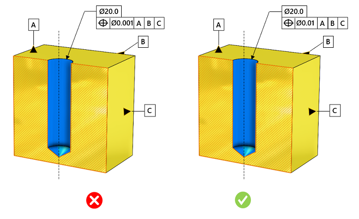

DFMPro は、公差を緩和すべきだとは提案しません。部品サイズおよび穴径に基づいて、追加の解析が必要な厳しい公差を特定するのみです。
厳しい公差は製造コストを増加させ、生産性を低下させます。製造効率を向上させ、かつ機能的にも許容可能な公差を指定する必要があります。過度に厳しい公差はコスト増加と生産性低下を招きます。適切な公差を持つ部品は、優れた嵌合性と機能性を備え、製造効率も向上します。穴に対する推奨位置公差は、部品サイズおよび穴径に依存します。厳しい公差は、製品設計、製造、検査時間に影響を与えます。
以下は、コスト増加の要因の一部です:
品質検査の頻度が高くなる
高度または特殊な検査装置が必要となる
工具交換の頻度が増加する
最終部品の合格率が低下する
スクラップ率が高くなる
原材料の使用量が増加する
位置公差は部品サイズおよび穴径に依存し、部品サイズや穴径が大きくなるにつれて値も大きくなります。デフォルト構成では標準的な公差が示されており、機能要件によってより高い、または低い精度が求められる場合を除き、すべてのケースに適用されます。
公差値を定義する前に活用できる有用なヒントは以下のとおりです:
その部品はどのように機能するのか？
他の部品と相互作用する部品かを確認する。もし相互作用しないのであれば、厳しい公差は避ける
重要な寸法を特定し、必要に応じて公差を付与する
DFMPro は CAD モデルから穴を特定し、関連付けられた寸法公差および幾何公差を読み取り、それらを構成された値と照合して検証します。
ルール構成において、ユーザーは部品サイズ、穴径範囲、および対応する位置公差を設定できます。
部品外形サイズ = 部品の対角最大長のおおよその値
ここで、
Lt = 長さ
Wt = 幅
Ht = 高さ
Ldt = 部品の対角長

注記:
CAD モデルで指定された公差は、eDrawings レポートには表示されません。
ルール構成で設定された公差値は、公差ゾーンとなります。
本ルールでは、面やエッジなど、CAD フィーチャーに関連付け（参照）されている幾何公差のみが考慮されます。